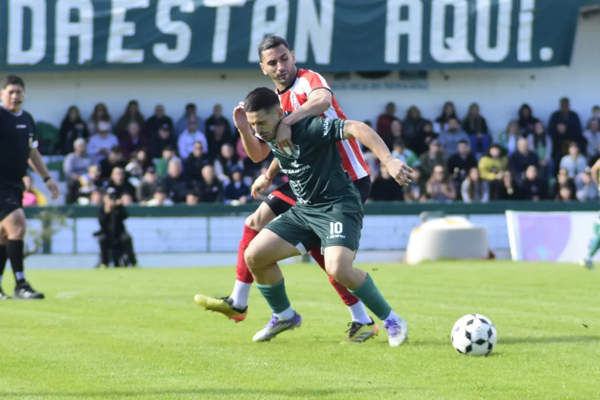

El Club Ferro es una institución deportiva fundada con la pasión de fomentar el deporte y la sana convivencia en General Pico.
A lo largo de los años, Ferro se ha posicionado como uno de los clubes más tradicionales de la región, siendo cuna de numerosos talentos deportivos y un espacio de encuentro para la comunidad local.
Desde sus inicios, el club ha mantenido el compromiso de brindar instalaciones de calidad y programas deportivos para todas las edades, consolidándose como un referente en la vida social y deportiva de General Pico.

La temporada 2026 de la Liga Pampeana de Fútbol llega a su desenlace esta tarde con el choque definitivo entre Costa Brava y Ferro Carril Oeste de General Pico. El encuentro decisivo tendrá lugar a partir de las 15:30 horas en el estadio Nuevo Pacaembú, luego de la paridad 1 a 1 registrada en el cotejo de ida disputado en El Coloso de barrio Talleres.
Las distintas categorías del club mantienen sus entrenamientos y actividades para todas las edades.
Ferro sigue siendo un punto de encuentro para el deporte y la vida social de General Pico.
| Pos | Club | PT | PJ | PG | PE | PP | DF |
|---|---|---|---|---|---|---|---|
| 2 | 37 | 22 | 10 | 7 | 5 | 10 | |
| 5 | 32 | 22 | 9 | 5 | 8 | 0 | |
| 7 | 27 | 22 | 7 | 6 | 9 | 2 | |
| 8 | Ferro Carril Oeste | 27 | 22 | 6 | 9 | 7 | -5 |
| 10 | 24 | 22 | 6 | 6 | 10 | -4 | |
| 11 | 20 | 22 | 4 | 8 | 10 | -15 |